第四章 基本平面图形

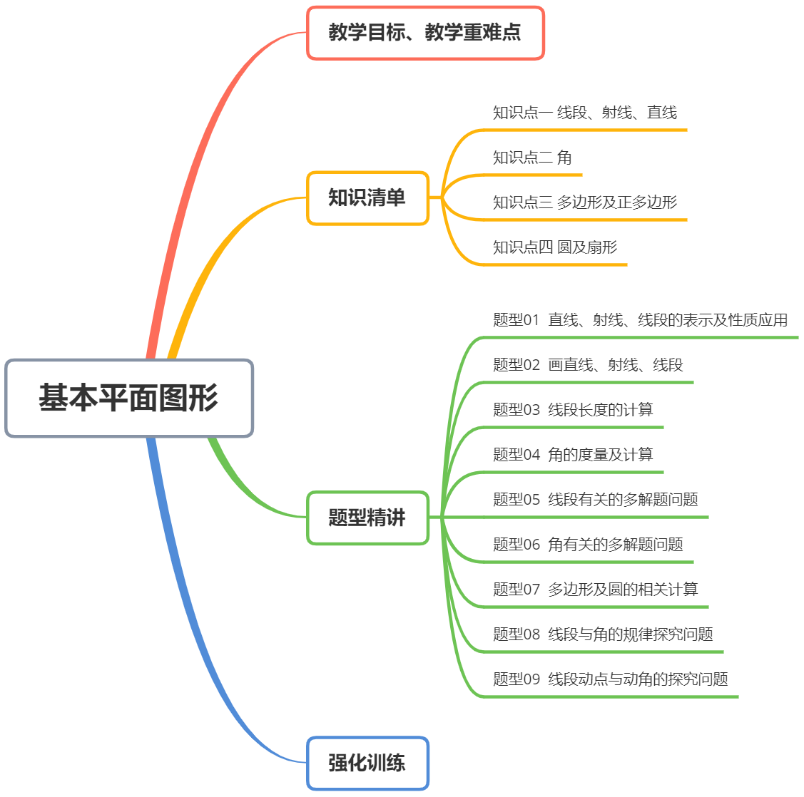

教学目标 | 1. 掌握线段、射线、直线、角、多边形和圆的定义、构成要素及规范表示方法，理解相关性质公理。 2. 熟练运用尺规作图、量角器测量等技能，掌握线段长短比较、角的度量与度分秒换算。 3. 能从生活实例抽象几何图形，建立“元素—关系—图形”知识网络，解决简单实际问题。 |
教学重难点 | 1.重点 （1）核心概念理解与表达：明确线段、角等图形的本质属性，规范使用文字和符号语言描述。 （2）基本性质与技能运用：掌握“两点确定一条直线”等公理，熟练进行线段、角的相关操作与计算。 2.难点 （1）抽象概念具象化：难以直观感知射线、直线的无限延伸性，易混淆角的静态与动态定义。 （2）几何语言与建模：符号表示易出错（如射线端点顺序），难将实际问题转化为几何模型解决。 |

知识点一 线段、射线、直线
1.概念：线段是直线上两点之间的部分，有两个端点；射线是将线段向一个方向无限延长形成的，只有一个端点；直线是将线段向两个方向无限延长形成的，没有端点。
2.表示方法：都可以用两个大写字母表示，线段、直线也可以用一个小写字母表示。表示射线时，必须将表示端点的字母写在前面。
3.直线的性质：两点确定一条直线。
4. 线段的性质：两点之间线段最短，两点之间线段的长度叫两点间的距离。
5.线段的中点：把一条线段平均分成两条相等线段的点，叫做这个线段的中点。线段中点到线段两个端点的距离相等，对于任意一条线段，它都有且只有一个中点。
知识点二 角
1.定义：有公共端点的两条射线组成的图形叫做角；也可以看作一条射线绕着它的端点旋转而形成的图形。
2.表示法：可以用三个大写字母表示，顶点字母写在中间；也可用一个大写字母表示（当以该字母为顶点的角只有一个时）；还可以用小写希腊字母或数字表示。
3.度量单位：度、分、秒，1周角=360°，1平角=180°，1°=60′，1′=60″。
4.角平分线：从一个角的顶点出发，把这个角分成相等的两个角的射线叫做角平分线。
知识点三 多边形及正多边形
1.定义：多边形是由一些不在同一条直线上的线段依次首尾相连组成的封闭平面图形。各边相等、各角也相等的多边形叫做正多边形。
2.相关概念：多边形有顶点、边、内角、外角和对角线等概念。n边形一个顶点的对角线数为n-3，n边形的对角线总数为n(n−3)2，n边形的外角和为360°。
知识点四 圆及扇形
1.圆的定义：在一个平面内，一条线段绕着它固定的一个端点旋转一周，另一个端点所形成的图形叫做圆，固定的端点叫做圆心，线段叫做半径。
2.扇形：圆上任意两点间的部分叫做圆弧，由一条弧和经过这条弧的端点的两条半径所组成的图形叫做扇形，顶点在圆心的角叫做圆心角。

题型01 直线、射线、线段的表示及性质应用
【典例1】（25-26七年级上·辽宁阜新·期中）如图，A，B在直线l上，下列说法错误的是（ ）
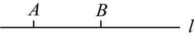
A．射线 和射线
和射线 是同一条射线 B．直线和直线是同一条直线
是同一条射线 B．直线和直线是同一条直线
C．线段和线段是同一条线段 D．图中以点A为端点的射线有两条
【答案】A
【分析】本题考查了直线，射线，线段的定义．直线：在平面内，无端点，向两方无限延伸的线，射线：在平面内，有一个端点，向一方无限延伸，线段：在平面内，有两个端点，不延伸．
根据直线，射线，线段的定义进行判断即可．
【详解】解：A． 射线和射线不是同一条射线，原说法错误；
B． 直线和直线是同一条直线，原说法正确；
C． 线段和线段是同一条线段，原说法正确；
D． 图中以点A为端点的射线有两条，原说法正确；
故选：A．
【变式1】（24-25七年级上·山东·期中）如图，下列说法正确的是（ ）

A．图中共有5条线段
B．直线与直线 是指同一条直线
是指同一条直线
C．射线与射线是指同一条射线
D．点 在直线上
在直线上
【答案】B
【分析】本题考查了直线、射线、线段的定义，点与直线的位置关系，是基础题，熟记概念是解题的关键．
根据直线、射线、线段的定义和点与直线的位置关系对各小题分析判断即可得解．
【详解】解：A．图中有线段、 、，
、， ，
， ，
， ，共6条线段，原说法错误，不符合题意；
，共6条线段，原说法错误，不符合题意；
B．直线与直线表示的是同一条直线，正确，符合题意；
C．射线与射线表示的不是同一条射线，原说法错误，不符合题意；
D．点不在直线上，原说法错误，不符合题意．
故选：B．
【变式2】（25-26八年级上·全国·周测）下列说法中，错误的有（ ）
①两点之间线段最短； ②直线AB长10cm；
③过A，B两点可以作无数条直线； ④线段AB和线段BA是同一条线段．
A．1个 B．2个 C．3个 D．4个
【答案】B
【分析】根据线段的性质，直线、射线、线段的定义，逐一判断即可解答．
【详解】解：①两点之间线段最短，故①正确；
②直线 长
长
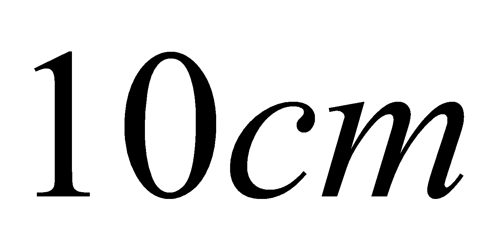
,故②不正确；③过 两点只能作一条直线，故③不正确；
两点只能作一条直线，故③不正确；
④线段和线段 是同一条线段，故④正确；
是同一条线段，故④正确；
所以，上述说法中，错误的个数有2个，
故选：B．
【点睛】本题考查了线段的性质，直线、射线、线段，解决问题的关键是熟练掌握这些数学知识．
【变式3】（25-26七年级上·全国·课后作业）如图，下列说法正确的是（ ）

A．射线与射线 是两条不同的射线 B．直线与直线
是两条不同的射线 B．直线与直线 是两条不同的直线
是两条不同的直线
C．线段与线段是同一条线段 D．射线与射线是同一条射线
【答案】C
【分析】本题考查了直线、射线、线段的定义的理解，根据定义即可求解．
【详解】解：选项 ：射线与射线
：射线与射线
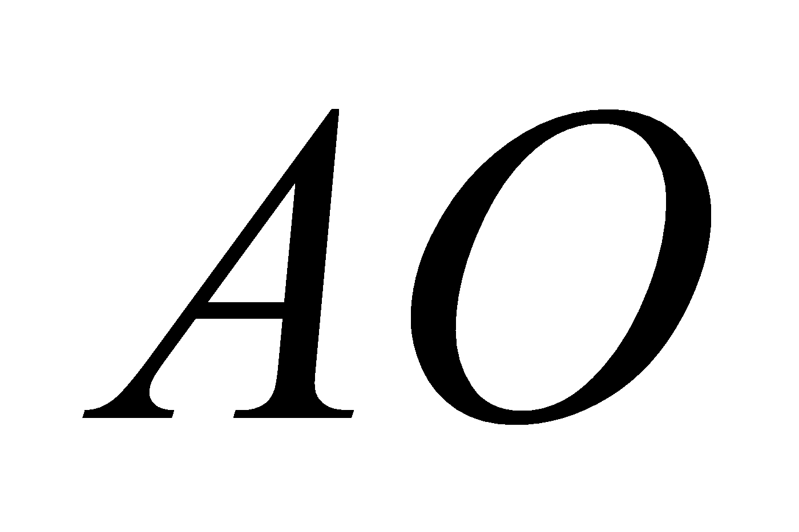
端点相同，延伸方向相同，是相同射线，故原说法错误，选项不符合题意；选项 ：直线可以向两端无限延伸，直线
：直线可以向两端无限延伸，直线 与直线
与直线 是同一条直线，故原说法错误，选项不符合题意；
是同一条直线，故原说法错误，选项不符合题意；
选项 ：线段与线段
：线段与线段
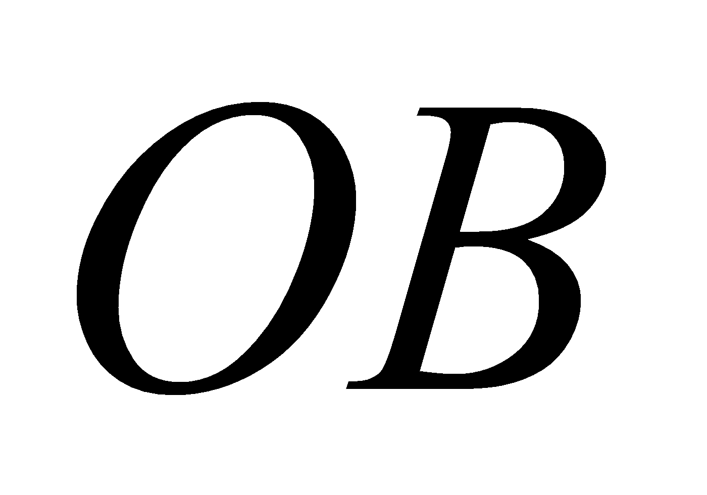
端点均为B和O，是同一条线段，故原说法正确，选项符合题意；选项 ：射线与射线端点不同，是不同射线，故原说法错误，选项不符合题意．
：射线与射线端点不同，是不同射线，故原说法错误，选项不符合题意．
故选：．
题型02 画直线、射线、线段
【典例2】（2025七年级上·全国·专题练习）已知，如图在平面内有A、B、C、D四点，根据下列语句画出图形．
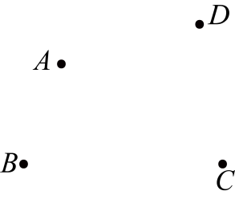
(1)画直线、线段、射线 ；
；
(2)在线段上任取一点E（不同于点B，C）连接 ，
， ；
；
(3)数一数此时图中共有几条线段，几条射线？
【答案】(1)见解析
(2)见解析
(3)共有7条线段，6条射线
【分析】本题主要考查了直线、射线、线段的定义，熟练掌握各定义是解题的关键．
（1）利用直线、线段、射线的定义作图即可；
（2）依据在线段上任取一点E，连接
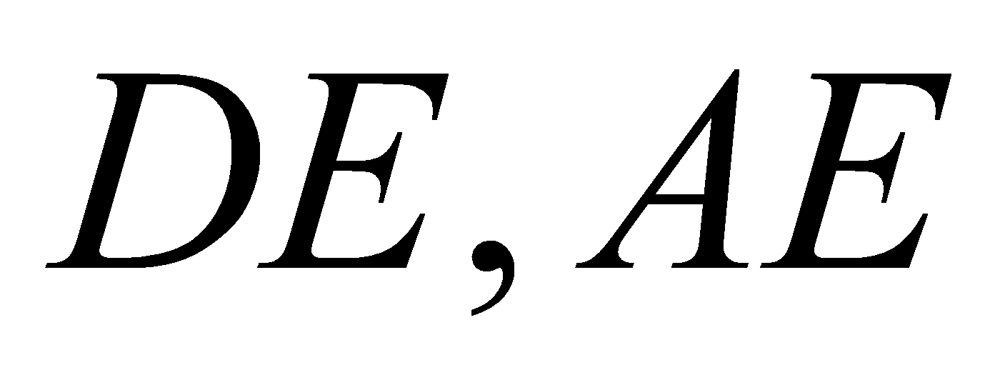
即可；（3）根据线段和射线的定义即可求解．
【详解】（1）解：直线、线段、射线如图所示，
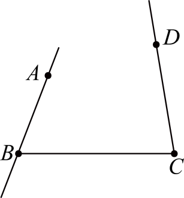
（2）解：点 ，如图所示，
，如图所示，
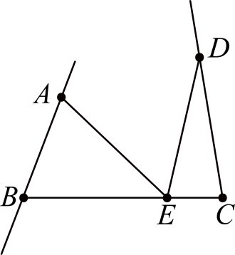
（3）解：根据题意可知，线段有 ，图中共有7条线段；以点
，图中共有7条线段；以点 为端点的射线共有2条，以点
为端点的射线共有2条，以点 为端点的射线共有2条，以点
为端点的射线共有2条，以点 为端点的射线共有1条，以点
为端点的射线共有1条，以点 为端点的射线共有1条，则共有6条射线．
为端点的射线共有1条，则共有6条射线．
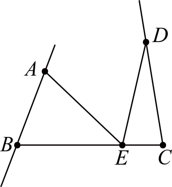
【变式1】（25-26七年级上·全国·课后作业）在图中有A，B，C，D四个点，请按下列语句画图并填空：
(1)画射线．
(2)画线段和，它们相交于O．
(3)画直线 ，连接和
，连接和 ．
．
(4)此时，图中共有线段________条，射线________条，直线________条．
【答案】(1)见解析
(2)见解析
(3)见解析
(4)10，6，1
【分析】本题主要考查了直线，射线，线段的画法和数量，掌握直线，射线，线段的定义是解题的关键．
（1）根据射线的定义画图即可；
（2）根据线段的定义画图即可；
（3）根据直线的定义画图即可；
（4）根据直线，射线，线段的定义求数量即可．
【详解】（1）解：射线如图，
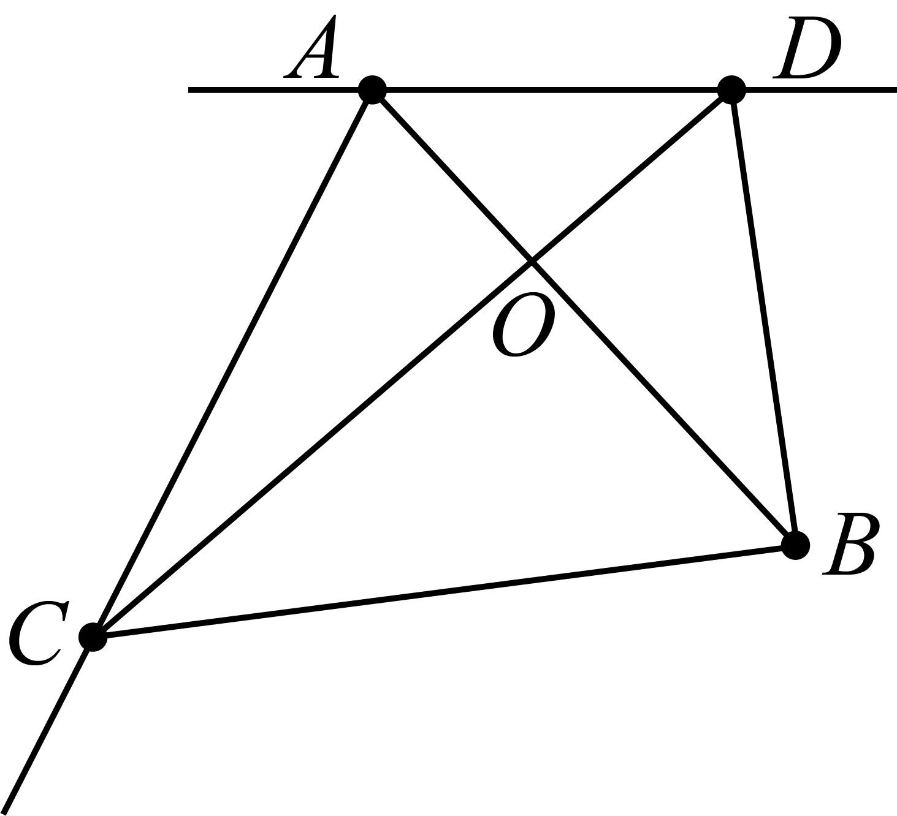
（2）解：线段和如图，
（3）解：直线，连接 和
和 如图，
如图，
（4）解：从图中可以知道图中有10条线段，有6条射线，有1条直线，
故答案为：10，6，1．
【变式2】（24-25七年级上·四川泸州·期末）如图，平面上有四个点A，B，C，D，根据下列语句画图：

(1)画直线，画射线 ，连接；
，连接；
(2)连接 ，并反向延长至点E，使；
，并反向延长至点E，使；
(3)请在A，B，C，D四个点围成的四边形内找一点O，使最小，理由是______．
【答案】(1)见解析
(2)见解析
(3)图见解析，两点之间线段最短
【分析】本题考查作图-复杂作图，直线，射线，线段，两点之间线段最短，解题的关键是理解直线，射线，线段的定义．
（1）根据直线，射线，线段的定义画出图形；
（2）根据题目要求画出图形；
（3）连接 ，交于点O，点O即为所求．
，交于点O，点O即为所求．
【详解】（1）解：如图，直线，射线，线段即为所求；
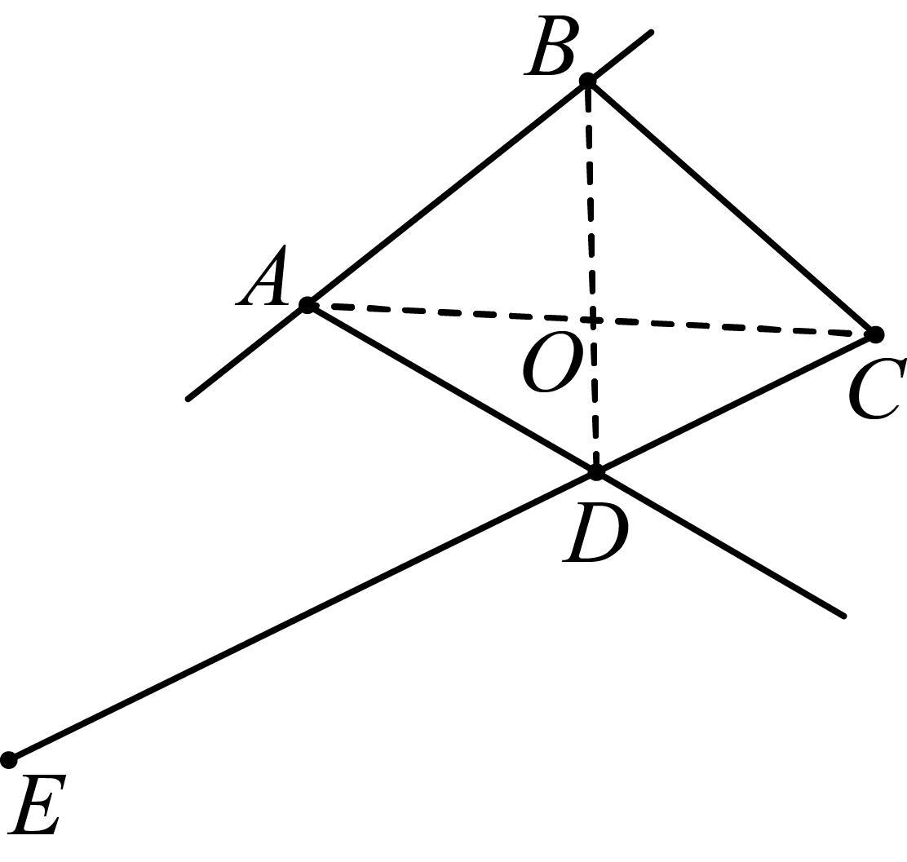
（2）解：如图，线段 即为所求；
即为所求；
（3）解：如图，点O即为所求．理由是：两点之间线段最短．
故答案为：两点之间线段最短．
【变式3】（24-25六年级下·黑龙江哈尔滨·期末）如图，平面上有四个点A、B、C、D，根据下列语句画图．

(1)画直线；
(2)作射线 ，与直线交于点；
，与直线交于点；
(3)连接；
(4)找到一点 ，使到、、、四点的距离和最短．
，使到、、、四点的距离和最短．
【答案】(1)图见解析
(2)图见解析
(3)图见解析
(4)图见解析
【分析】本题考查了直线、射线、线段的画法，两点之间线段最短，熟练掌握直线、射线、线段的画法是解题关键．
（1）根据直线的画法即可得；
（2）根据射线的画法即可得；
（3）根据线段的画法即可得；
（4）连接
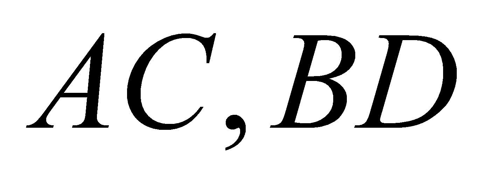
，交于点，根据两点之间线段最短可得点即为所求．【详解】（1）解：如图，直线即为所求．
（2）解：如图，射线和点即为所求．
（3）解：如图，线段即为所求．
（4）解：如图，点即为所求（理由：两点之间线段最短）．
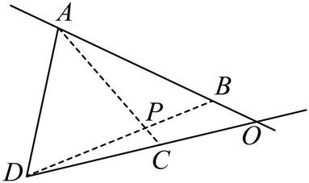
题型03 线段长度的计算
【典例3】（2025七年级上·全国·专题练习）如图，已知点为线段上一点，
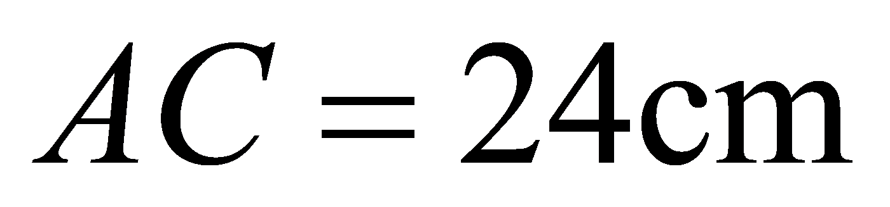
， ，、分别是、的中点．求：
，、分别是、的中点．求：
(1)的长度为______；
(2)的长度为______；
(3)若 在直线上，且
在直线上，且 ，求
，求 的长度．
的长度．
【答案】(1)
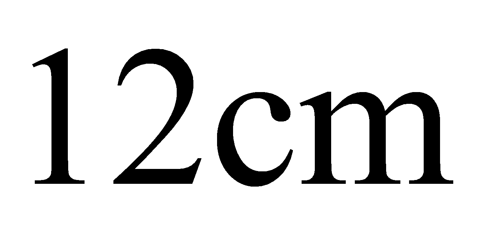
(2)
(3)的长度为
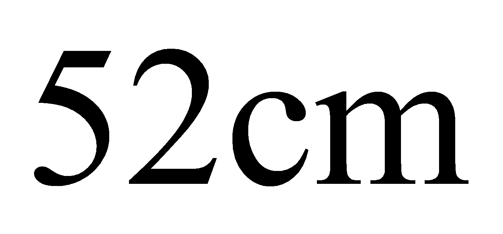
或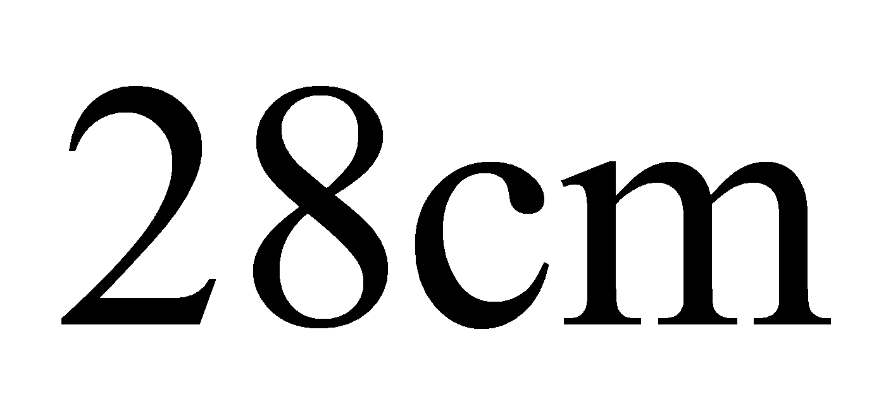
【分析】本题考查了关于线段的中点的计算，线段的和与差的计算，读懂题意熟练运用线段的和差倍分是解本题的关键．
（1）直接根据是的中点可得答案；
（2）先求出的长，然后根据是的中点求出 ，根据即可求解；
，根据即可求解；
（3）分在点的右侧、在点的左侧两种情况进行计算即可．
【详解】（1）解：∵，是的中点．
∴
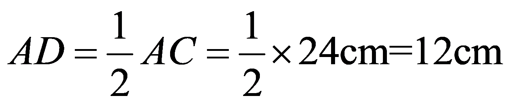
故答案为：；
（2）∵，，
∴（ ），
），
∵是的中点
∴
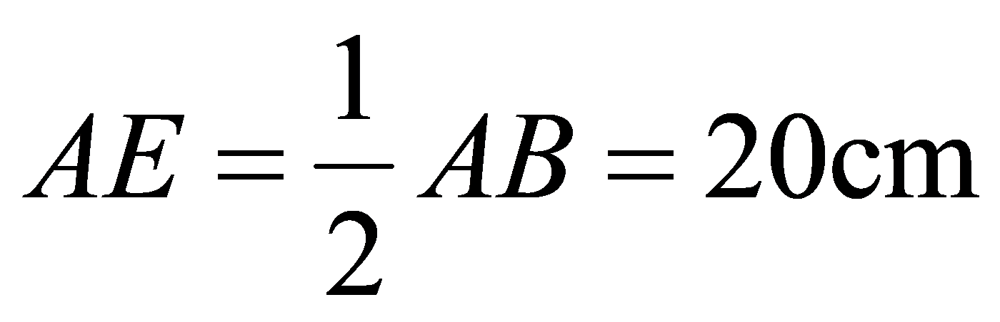
，∴
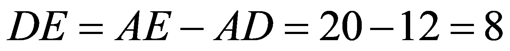
（），故答案为：；
（3）当在点的右侧时，
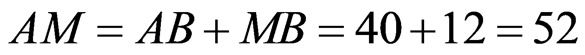
（），当在点的左侧时，
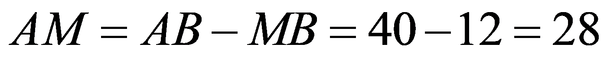
（），∴的长度为或．
【变式1】（2025七年级上·全国·专题练习）如图，已知B、C在线段上．
(1)图中共有______条线段；
(2)若 ．
．
①比较线段的长短：______ （填“ ”、“
”、“ ”或“
”或“ ”）；
”）；
②若
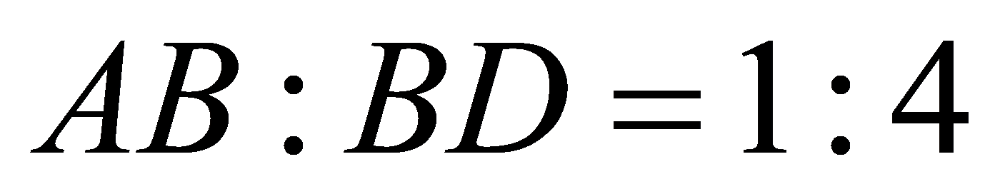
， ，求的长度；
，求的长度；(3)在（2）的条件下，点M是线段的中点，点N是线段的三等分点，求线段 的长度．
的长度．
【答案】(1)6
(2)①=；②
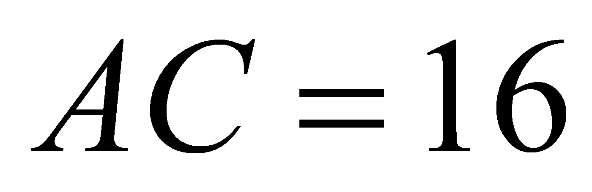
(3)的长为6或10
【分析】本题主要考查了线段的定义、线段的和差，比较线段的长短，（1）根据图形依次数出线段的条数即可；
（2）①根据等式的性质即可得到答案；②依据线段的和差关系进行计算，即可得出的长；
（3）分类讨论，点N是靠近点B或者点C的三等分点，据此利用线段和差求解即可．
【详解】（1）解：图中有线段：、、、、、，共6条，
故答案为：6．
（2）解：①∵，
∴
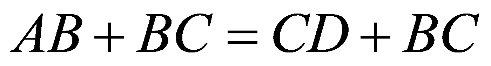
，即 ，
，故答案为：．
②∴，，
∴
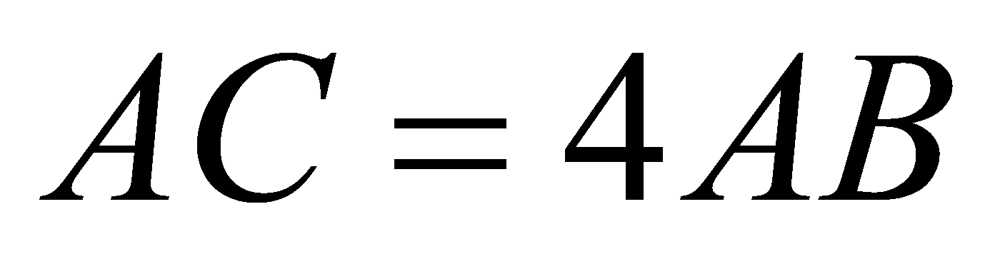
，∴ ，
，
∵，
∴ ，
，
∴
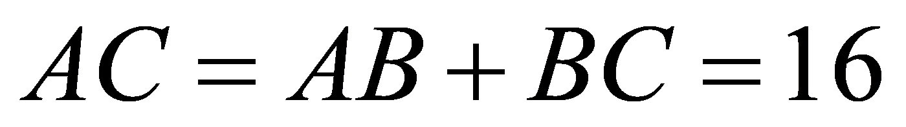
．（3）解：∵点M为中点，
∴
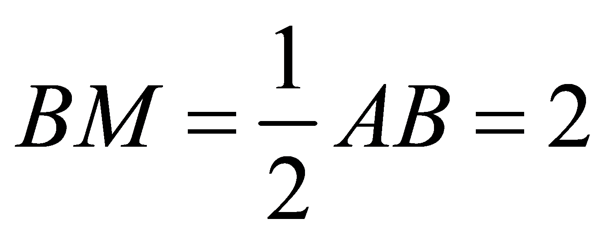
，当点N是靠近点B的三等分点时，
则
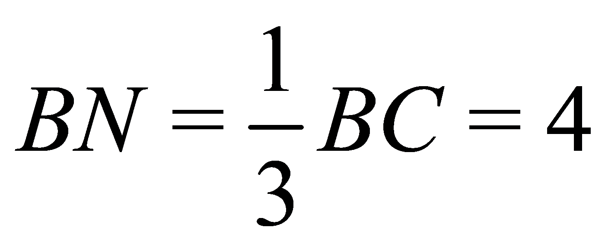
，∴
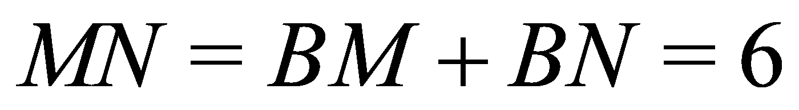
；当点N是靠近点C的三等分点时，
则
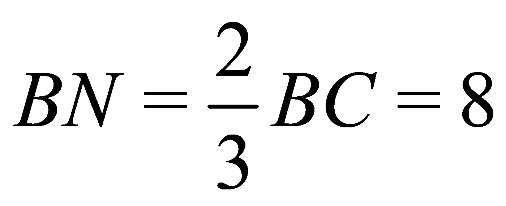
，∴；
综上，的长为6或10．
【变式2】（24-25七年级上·全国·期末）在如图所示的数轴上，某点从原点开始运动，先向左平移2个单位长度到达点A，再向左平移4个单位长度到达点B，最后向右平移10个单位长度到达点C．
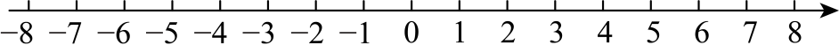
(1)分别写出点A，B，C表示的数．
(2)若点P在线段上运动，当
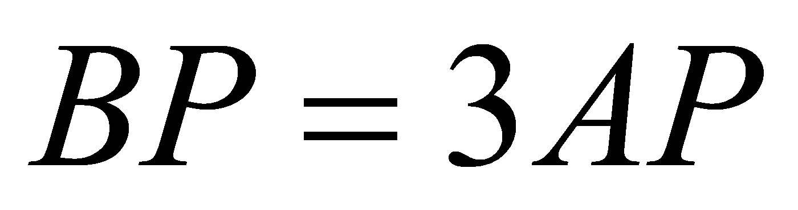
时，求出点P表示的数．(3)若点Q从点C出发，在线段的延长线上运动，M是 的中点，N是
的中点，N是
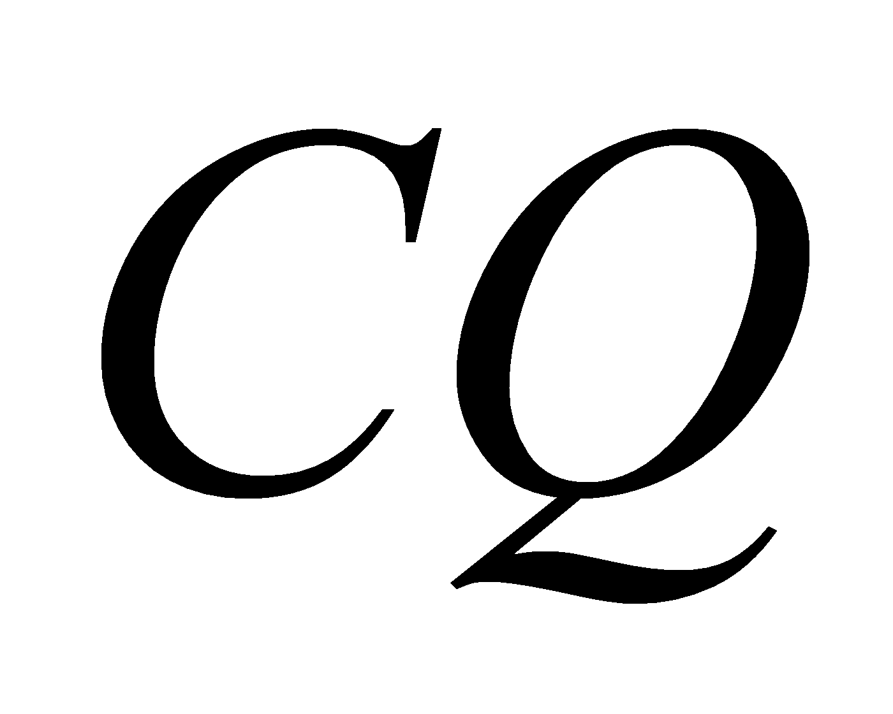
的中点，试说明是一个定值．【答案】(1)
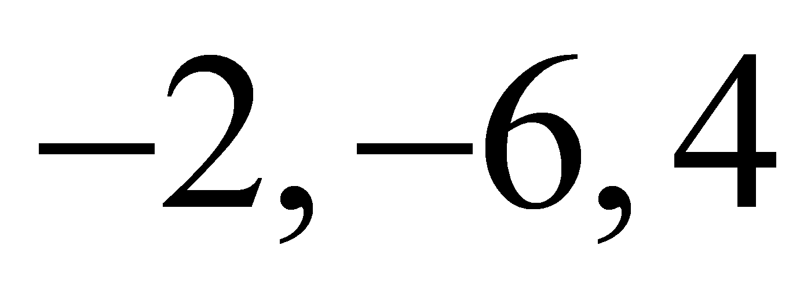
(2) 或0
或0
(3)见解析
【分析】本题主要考查了数轴以及两点间的距离，线段的和差，解题的关键是正确理解题意，根据两点之间的距离等于差的绝对值求解．
（1）根据数轴的意义解答即可；
（2）分点在线段上和点在线段上时两种情况讨论即可；
（3）根据线段中点的定义以及线段的和差关系解答即可．
【详解】（1）解：从原点开始运动，先向左平移2个单位长度到达点A，则点表示的数为 ，
，
再向左平移4个单位长度到达点B，则点表示的数为 ，
，
最后向右平移10个单位长度到达点C，则点表示的数为
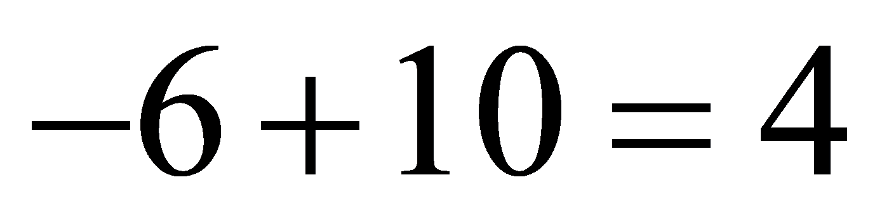
．（2）解：可分为以下两种情况讨论：
①当点在线段上时，
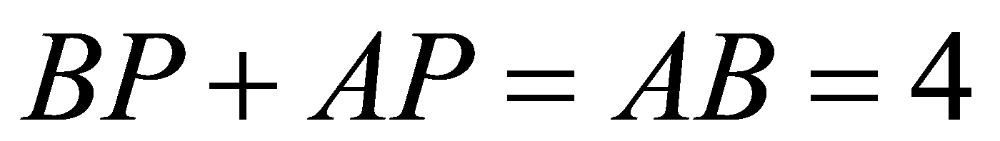
．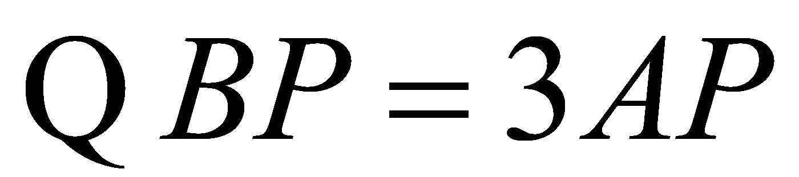
，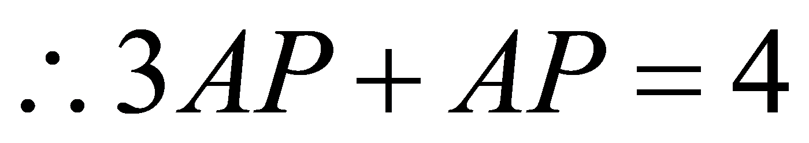
．解得
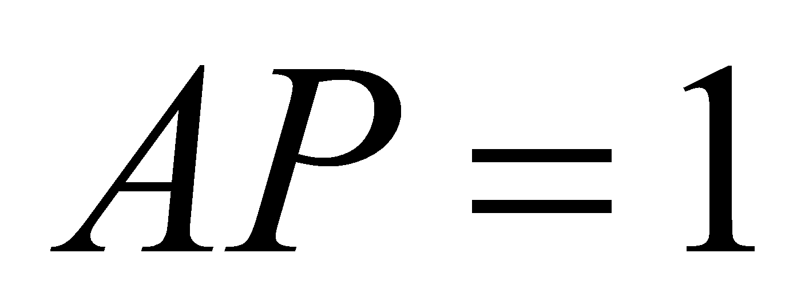
． 点表示的数为．
点表示的数为．
②当点在线段上时，
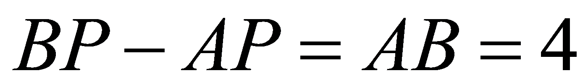
．，
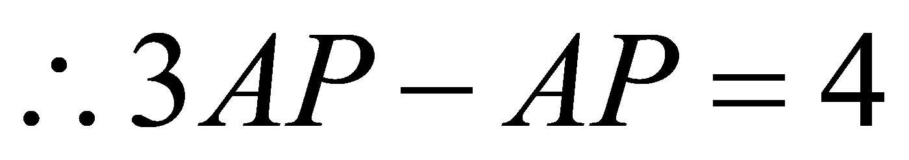
．解得
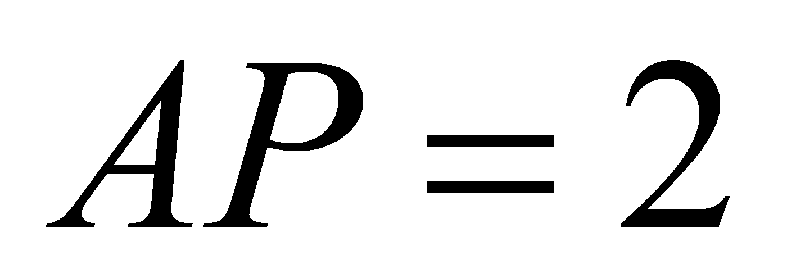
．点表示的数为0．
综上所述，点表示的数为或0．
（3）解：设点 表示的数为
表示的数为 ，则
，则
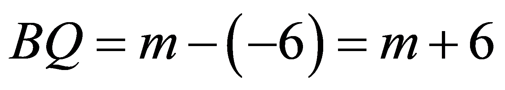
，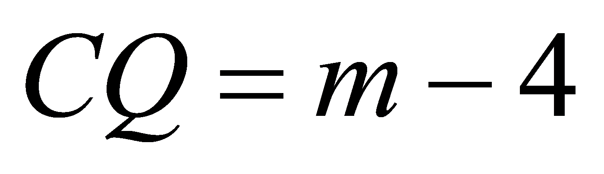
． 是的中点，
是的中点， 是的中点，
是的中点，
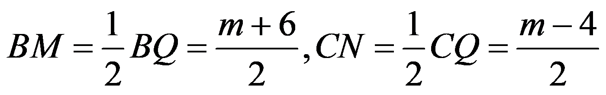
．
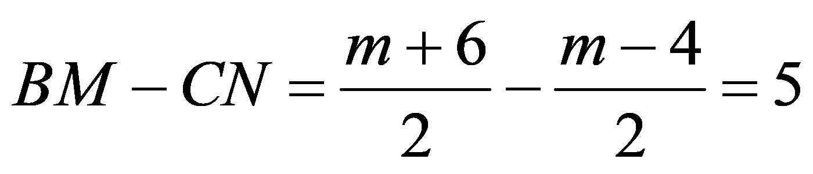
．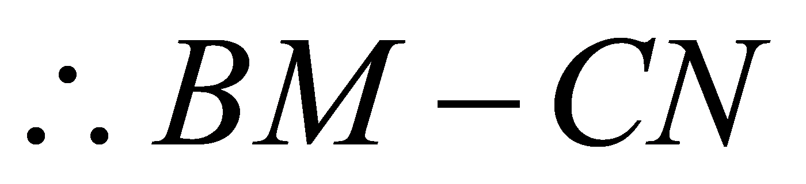
是一个定值．【变式3】（24-25七年级上·陕西咸阳·阶段练习）【问题背景】
如图，已知线段 ，点是线段的中点，点是线段的中点．
，点是线段的中点，点是线段的中点．

【问题探究】
（1）如图1，求线段的长；
（2）如图2，点是线段上的一点，且满足 ，
，
①求线段 的长；
的长；
②若点是线段上的一点， ，求
，求 的长．
的长．
【答案】（1）4；（2）①10，②7或1
【分析】本题考查了两点间的距离，线段中点的有关计算，线段的和差，关键是注意分类讨论．
（1）根据线段中点进行求解即可；
（2）①根据已知先得到
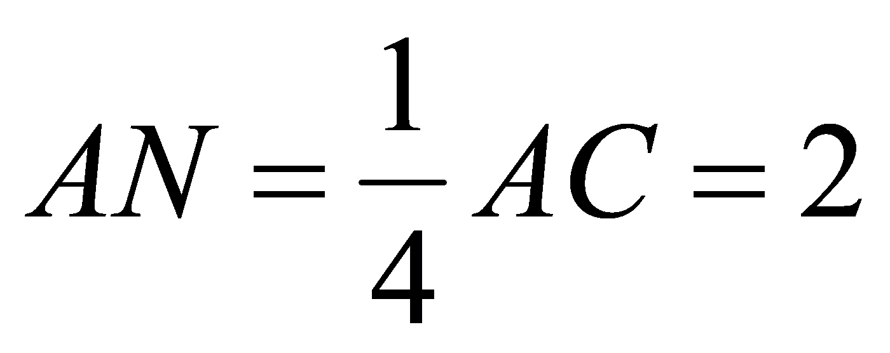
，再利用求出最后结果；②分M点在C点左边、M点在C点右边两种情况讨论．
【详解】解：（1），点是的中点，
．
 点是线段的中点，
点是线段的中点，
．
（2）①，，
，
，
．
②，，
．
当点在点左边时，， ，
，
．
当点在点右边时，，，
．
综上可得的长为7或1．
题型04 角的度量及计算
【典例4】（23-24七年级上·陕西安康·期末）如图，射线在 的内部，
的内部， ，
， 分别是，
分别是， 的平分线．
的平分线．
(1)若， ，则
，则 度；
度；
(2)若的度数为 ，的度数为β，则
，的度数为β，则 是多少度？（用α，β表示）
是多少度？（用α，β表示）
(3)请写出与 的数量关系，并说明理由．
的数量关系，并说明理由．
【答案】(1)40
(2)
(3)
【分析】本题考查了角平分线的定义和角度的和差倍分计算，根据图形得出角之间的关系是解题的关键．
（1）根据角平分线的定义求得及 的度数，再由角之间的和差关系计算即可；
的度数，再由角之间的和差关系计算即可；
（2）同（1）的方法，即可求解；
（3）根据角平分线的定义表示出及，再由角之间的和差关系即可得到结论．
【详解】（1）解：∵，分别是，的平分线，且，，
∴，，
∴，
故答案为：40；
（2）解：∵，分别是，的平分线，且 ，，
，，
∴，
∴；
（3）解：，理由如下：
∵射线在的内部，，分别是，的平分线，
∴，
∴．
【变式1】（23-24七年级上·江西·期末）已知，是过点的一条射线， 分别平分
分别平分 ．
．

(1)如图①，如果射线在的内部， ，则
，则
 ；
；
(2)如图②，如果射线在的内部绕点旋转， ，则 ；
，则 ；
(3)如果射线在的外部绕点旋转，，请借助图③探究 的度数．
的度数．
【答案】(1)40
(2)
(3)的度数为 或
或
【分析】此题考查角平分线的定义，关键是根据角平分线的定义解答．
（1）根据角平分线的定义解答即可；
（2）根据角平分线的定义解答即可；
（3）分两种情况，利用角平分线的定义解答即可．
【详解】（1）解：∵ 分别平分
分别平分 ，
，
∴ ，，
，，
∴，
故答案为： ；
；
（2）解：∵分别平分，
∴，，
∴，
∴ ，
，
故答案为： ；
；
（3）解：分两种情况：
①如图：

∵分别平分，
∴，，
∴，
∴；
②如图：
∵分别平分，
∴，，
∴，
∴ ；
；
综上所述，的度数为 或
或 ．
．
【变式2】（24-25七年级上·广东东莞·期末）已知锐角，点为平面内一点，，分别平分和．

(1)如图 ，点为内一点，求证：；
，点为内一点，求证：；
(2)如图 ，点为外一点，其他条件不变，（1）中的结论还成立吗？若不成立，请说明理由；若成立，请证明；
，点为外一点，其他条件不变，（1）中的结论还成立吗？若不成立，请说明理由；若成立，请证明；
(3)当点在平面内其他位置时，与之间还存在其他的数量关系吗？请画图并直接写出结论．
【答案】(1)见解析
(2)（1）中的结论结成立．证明见解析
(3)存在，画图见解析，数量关系为．
【分析】本题考查的是角平分线的定义，角的和差运算；
（1）先证明 ，
， ，可得，进一步可得结论；
，可得，进一步可得结论；
（2）先证明，，可得，进一步可得结论；
（3）先构建图形，证明，，可得，进一步可得结论；
【详解】（1）证明： ，分别平分和，
，分别平分和，
，．
．
，
．
（2）证明：（1）中的结论结成立．
，分别平分和，
，．
．
，
．
（3）解：存在，如图所示，；
理由如下：，分别平分和，
，．
，
∵，
∴．
【变式3】（24-25七年级上·吉林长春·阶段练习）如图1，已知内部有三条射线 ．
． 平分，
平分， 平分．
平分．

（1）若 ，求
，求 ；
；
（2）若 ，
， ，则
，则 ________；
________；
（3）若 ，猜想出与的关系________．
，猜想出与的关系________．
【拓展提问】若射线在的外部如下图2，图3，，平分，平分，分别写出与的关系的结论．（直接写出结论）
【答案】（1） ；（2）；（3）；【拓展提问】图2：；图3：
；（2）；（3）；【拓展提问】图2：；图3：
【分析】本题主要考查了角平分线的定义，角的和与差，利用类比思想解答是解题的关键．
（1）根据角平分线的定义可得，即可求解；
（2）根据角平分线的定义可得，即可求解；
（3）根据角平分线的定义可得，即可求解；
【拓展提问】根据角平分线的定义以及角的和与差解答即可．
【详解】解：（1）∵，平分，平分，
∴，
∴；
（2）∵，，平分，平分，
∴，
∴；
故答案为：；
（3）平分，平分，
∴，
∴，
∵，
∴；
故答案为：；
【拓展提问】如图2，
∵平分，平分，
∴，
∴，
∵，
∴；
如图3，
∵平分，平分，
∴，
∴，
∵，
∴．
题型05 线段有关的多解题问题
【典例5】（23-24七年级下·山东临沂·开学考试）已知点A、B、C位于直线 上，其中线段，且，若点M是线段的中点，则线段
上，其中线段，且，若点M是线段的中点，则线段 的长为 ．
的长为 ．
【答案】 或
或
【分析】本题考查了线段之间的数量关系，掌握数形结合和分类讨论思想是解题的关键．
需要分两种情况，当点在点的右侧时和当点在点的左侧时，根据题意，画出图形，再根据线段之间的数量关系计算即可．
【详解】解：如图，当点在点的右侧时，
，且，
 ，
，
，
点是线段的中点，
，
．
如图，当点在点的左侧时，
，且，
，
，
点是线段的中点，
，
．
综上所述，线段的长为或，
故答案为：5或1．
【变式1】（24-25七年级上·浙江杭州·期中）在一条可以折叠的数轴上依次有点A，C，B，其中点A，点B表示的数分别为 和7，现以点C为折点，将数轴向右对折，点A对应的点为点
和7，现以点C为折点，将数轴向右对折，点A对应的点为点 ，若，B两点之间的距离为1，则点C表示的数为 ．
，若，B两点之间的距离为1，则点C表示的数为 ．
【答案】或．
【分析】本题主要考查了数轴，中点的计算等知识点，由折叠及 、之间的距离为1，可得
、之间的距离为1，可得 表示的数，再由点表示的数为
表示的数，再由点表示的数为 ，求解即可，熟练掌握其性质并能灵活运用中点的计算是解决此题的关键．
，求解即可，熟练掌握其性质并能灵活运用中点的计算是解决此题的关键．
【详解】解：设点表示的数为 ，
，
，表示的数为7，
表示的数为或 ，
，
点表示的数为，
点表示的数为或，
故答案为：或．
【变式2】（24-25七年级上·河北石家庄·期末）如图，有公共端点的两条线段 ，
， 组成一条折线，若该折线上一点把这条折线分成相等的两部分，我们把这个点叫做这条折线的“折中点”，已知是折线
组成一条折线，若该折线上一点把这条折线分成相等的两部分，我们把这个点叫做这条折线的“折中点”，已知是折线 的“折中点”，为线段的中点，
的“折中点”，为线段的中点， ，
， ，则线段的长为 ．
，则线段的长为 ．
【答案】2或10
【分析】本题考查了与线段中点有关的运算，理解“折中点”的定义，正确分两种情况讨论是解题关键．分两种情况：①当点在线段上时和②当点在线段上时，先根据线段中点的定义求出的长，再根据线段和差、“折中点”的定义求解即可得．
【详解】解：①如图，当点在线段上时，
∵为线段的中点，，
∴，
∵，
∴，
∵是折线的“折中点”，
∴，
∴，
∴ ；
；
②如图，当点在线段上时，
∵为线段的中点，，
∴，
∵，
∴，
∵是折线的“折中点”，
∴，
∴；
综上，线段的长为2或10，
故答案为：2或10．
【变式3】（23-24七年级上·浙江湖州·期末）如图，两根木条的长度分别为 和，在它们的中点处各打一个小孔M，N（木条的厚度，宽度以及小孔大小均忽略不计）．将这两根木条的一端重合并放置在同一条直线上，则两小孔间的距离
和，在它们的中点处各打一个小孔M，N（木条的厚度，宽度以及小孔大小均忽略不计）．将这两根木条的一端重合并放置在同一条直线上，则两小孔间的距离
 ．
．
【答案】2.5或11.5
【分析】本题主要考查了线段的中点问题，注意两端重合有2种情况，如图，设短的木条为，长的木条为，然后分B、C两点重合与A、C两点重合两种情况进一步分析求解即可.
【详解】如图，设短的木条为，长的木条为，
则：，，
①当B、C两点重合时，
此时；
②当A、C两点重合时，
此时；
综上所述，的长度为 或，
或，
故答案为：2.5或11.5．
题型06 角有关的多解题问题
【典例6】（24-25七年级上·黑龙江哈尔滨·开学考试）已知 ，过作射线，作射线平分，若
，过作射线，作射线平分，若 ，则的度数为 ．
，则的度数为 ．
【答案】或
【分析】本题主要考查了角度计算问题，关键是讨论射线相对于的位置，分为在范围内和外两种情况，然后，利用和进行角度计算，即可分别得出的度数．
【详解】解：依据题意可知，射线所在位置分为两种情况：
情况一，射线在范围内，如图所示，
，，
，
平分，
；
情况二，射线在范围外，如图所示，
，，
，
平分，
．
综上所述，的度数为或．
故答案为：或．
【变式1】（23-24七年级上·四川成都·期末）如图，已知为从顶点出发的射线，，且 ，射线平分．平面内有射线
，射线平分．平面内有射线 和射线，射线平分
和射线，射线平分 ．若，则
．若，则 ．
．

【答案】或
【分析】本题考查了角的计算及角平分线，根据且，可得，根据角的和差关系可得的度数，再由角平分线的定义可得的度数，然后分在的内部和外部两种情况解答即可．
【详解】解：∵且，
∴，
∴，
∵射线平分，
∴，
当在的内部时，如图，
∴，
∵射线平分，
∴，
∴；
当在的外部时，如图，
∴，
∵射线平分，
∴，
∴．
综上所述，或．
故答案为：或．
【变式2】（24-25七年级上·河南郑州·期末）一副三角板按如图方式摆放，点 在同一条直线上，
在同一条直线上， ．现将三角板绕点逆时针旋转一周，当所在直线恰好平分
．现将三角板绕点逆时针旋转一周，当所在直线恰好平分 时，三角板转过的角度为 ．
时，三角板转过的角度为 ．
【答案】 或
或
【分析】本题考查了三角板中角度计算问题以及角平分线的有关计算，正确掌握相关性质内容是解题的关键．先认真读题干，然后进行分类讨论，逐个情况作图，运用角之间的和差关系分别列式计算，即可作答．
【详解】解：∵，
∴，
∴， ，
，
如图所示：
∵平分 ，
，
∴
∴ ，
，
此时三角板转过的角度为；
当的延长线 平分，如图所示：
平分，如图所示：

∴
则
故 ，
，
此时三角板转过的角度为；
故答案为：或．
【变式3】（24-25六年级下·山东泰安·期中）如图，已知是内部的一条射线，图中有三个角：，和，当其中一个角是另一个角的两倍时，称射线为的“巧分线”，如果 且
且 是的“巧分线”，则
是的“巧分线”，则 的度数为 ．
的度数为 ．
【答案】或或
【分析】本题考查了新定义、角度计算问题、角平分线的定义，理解“巧分线”的定义是解题的关键．根据“巧分线”的定义分情况讨论，画出对应的示意图，再结合图形利用角度之间的和差倍分关系即可求解．
【详解】解：①若平分，
则，
∴是的“巧分线”，
∴；
②若 ，此时是的“巧分线”，
，此时是的“巧分线”，
∴，
∴；
③若 ，此时是的“巧分线”，
，此时是的“巧分线”，
∴，
∴ ，
，
∴；
∴综上所述，的度数为或或．
故答案为：或或．
题型07 多边形及圆的相关计算
【典例7】（24-25七年级上·辽宁本溪·期末）过六边形的一个顶点能画出对角线的条数是 ．
【答案】3
【分析】本题主要考查了多边形的对角线，解答此类题目的关键是正确记忆一个n边形一个顶点出发，可以连的对角线的条数是 ．
．
根据从一个n边形一个顶点出发，可以连的对角线的条数是 进行计算即可．
进行计算即可．
【详解】解∶从六边形的一个顶点出发，引对角线的数量为∶ (条)，
(条)，
故答案为∶3．
【变式1】（2024七年级上·全国·专题练习）已知一个扇形的半径长为 ，圆心角为
，圆心角为 ，则这个扇形的面积为 ．
，则这个扇形的面积为 ．
【答案】
【分析】本题考查扇形面积公式，理解扇形面积与相应圆面积的比就是扇形圆心角占整个周角 的比，列式求解即可得到答案，熟记扇形面积公式并正确理解是解决问题的关键．
的比，列式求解即可得到答案，熟记扇形面积公式并正确理解是解决问题的关键．
【详解】解： 一个扇形的半径长为，圆心角为，
一个扇形的半径长为，圆心角为，
 这个扇形的面积为，
这个扇形的面积为，
故答案为：．
【变式2】（24-25九年级上·河北唐山·期中）外一点 到圆周上一点的最长距离为
到圆周上一点的最长距离为 ，最短距离为
，最短距离为 ，则的直径长为
，则的直径长为  ．
．
【答案】6
【分析】本题考查了圆的直径，半径，熟练掌握直径是圆的最大弦是解题的关键．
根据直径是圆中最大的弦解答即可．
【详解】解：如图，设圆的圆心为点O，
∵直径是圆中最大的弦，
∴过P，O作圆的直径 ，则，，
，则，，
∴，
∴圆的直径为 ，
，
故答案为：6．
【变式3】（24-25七年级上·山东枣庄·期末）在研究多边形的几何性质时，我们通常把它分割成几个三角形进行研究．从一个多边形的一个顶点引出的所有对角线，把它分割成5个三角形，则这个多边形的边数是 ．
【答案】7
【分析】本题考查了多边形的对角线，熟练掌握从n多边形的一个顶点引出的所有对角线，把它分割成 个三角形是解题的关键．
个三角形是解题的关键．
从n多边形的一个顶点引出的所有对角线，把它分割成个三角形，由此计算即可．
【详解】解：从一个多边形的一个顶点引出的所有对角线，把它分割成5个三角形，则这个多边形的边数是 ，
，
故答案为：7．
题型08 线段与角的规律探究问题
【典例8】（24-25七年级上·湖北孝感·期末）如图1，从点 分别引两条射线，则得到一个角
分别引两条射线，则得到一个角 ．（图中的角均指不大于平角的角）
．（图中的角均指不大于平角的角）

(1)探究：①如图2，从点分别引三条射线，则图中得到________个角；
②如图3，从点分别引四条射线，则图中得到________个角；
③依此类推，从点分别引 条射线，则得到________个角（用含的式子表示）；
条射线，则得到________个角（用含的式子表示）；
(2)应用：利用③中发现的规律解决问题：某校七年级共有16个班进行足球比赛，准备进行单循环赛（即每两队之间赛一场），则全部赛完共需多少场比赛？
【答案】(1)①3；②6；③
(2)
【分析】（1）①②根据角的概念求出即可；
③根据①②分析得出的规律求解即可；
（2）将代入求解即可．
【详解】（1）①由题意可得，从点分别引三条射线，图中的角有，
 ，
，
∴图中得到3个角；
②由题意可得，从点分别引四条射线，图中的角有，
，
∴图中得到6个角；
③由①②可得，
当从点分别引条射线，
，
∴得到个角；
（2）根据题意可得，
当时，．
∴全部赛完共需120场比赛．
【点睛】本题考查了角的定义及其应用，掌握角的定义以及归纳规律是解题的关键．
【变式1】（24-25六年级上·上海普陀·期末）如图1，已知 、
、 是内的两条射线．
是内的两条射线．

(1)已知 ，，
，， ，那么
，那么 ________．
________．
(2)如图2，设的度数是 ，
， 的度数是
的度数是 ，作射线
，作射线 平分
平分 ，射线
，射线 平分
平分 ．
．
①如果，，求 的度数．
的度数．
②如图3，作 平分，平分
平分，平分 ；作
；作 平分
平分 ，
， 平分，按此规律以此类推……作平分
平分，按此规律以此类推……作平分 ，
， 平分
平分 ，用含、、的代数式表示和的度数．（直接写出答案）
，用含、、的代数式表示和的度数．（直接写出答案）
【答案】(1)
(2)① ；②，
；②，
【分析】本题考查角的计算，角平分线性质，熟练掌握基本知识点是解题关键；
（1）先算出 的度数，即可求解；
的度数，即可求解；
（2）①先算出的度数，再通过角平分线算出，进而可求解；②同①的方法进行计算即可．
【详解】（1）解：∵，，
∴，
又∵，
∴，
故答案为：；
（2）解：①∵， ，
，
∴，
∵平分，平分．
∴，
∴，
∴；
②∵的度数是，的度数是，
∴，
∵平分，平分．
∴，
∴，
又∵平分，平分，
∴，
∴，
同理，，
∴，
∴．
【变式2】（24-25七年级上·山东济南·期末）有如下问题：“平面上，分别有2个点、3个点、4个点、5个点，……，n个点，其中任意3个点都不在一条直线上，经过每两点画一条直线，它们分别可以画多少条直线？”为了解决这一问题，小明设计了如图表进行探究：
点数 | 2 | 3 | 4 | 5 | … | n |
示意图 |
|
|
| … | ||
直线 | 1 |
|
| … |


【发现规律】
（1）当点数为5时，过任意一点的直线有_____条，共有直线_____条；
【探索归纳】
（2）当点数为时，过任意一点的直线有_____条，共有直线_____条；（用含的代数式表示）
【迁移运用】
（3）请按照小明的探究思路，分析并解决下列问题：
某学校七年级共有6个班进行足球比赛．
①若进行单循环比赛，每两个班都要赛一场，全部比完共进行了多少场比赛?
②比赛结束后，每两个班级之间互送一份纪念品，共送出多少件纪念品？
【答案】（1）4；10；（2） ；；（3）①15；②30
；；（3）①15；②30
【分析】本题主要考查了图形规律探究，两点确定一条直线，解题的关键是根据已知图形，得出一般规律．
（1）根据图形进行解答即可；
（2）根据已知图形得出一般规律，进行解答即可；
（3）①将 代入代数式进行求解即可；
代入代数式进行求解即可；
②将代入求出结果即可．
【详解】解：（1）当点数为5时，过任意一点的直线有4条，共有直线（条）；
故答案这：4；10；
（2）当点数为时，过任意一点的直线有 条，共有直线（条）；
条，共有直线（条）；
故答案为：；；
（3）①进行单循环比赛，每两个班都要赛一场，全部比完共进行的比赛场数为：
（场）；
②比赛结束后，每两个班级之间互送一份纪念品，共送出的纪念品件数为：
（件）．
【变式3】（23-24七年级上·江苏宿迁·期末）（1）知识探究：
如图1，已知一条直线 ，
，
当上有2个点时，图中只有，条线段，
当上有3个点时，图中有条线段，
当上有4个点时，图中有条线段，
当上有5个点时，图中有 条线段，
条线段，
．．．．．．
按此规律：
当上有个点时，图中有___________条线段：
（2）知识应用；
如图2，内有条射线，则图中共有___________个角；
（3）知识迁移：
如图3，线段BC上有2016个点，则图中共有___________个三角形；
（4）知识拓展：
①如图4，图中共有___________个长方形（含正方形）；
②如图5，图中共有___________个长方形（含正方形）；

【答案】（1）；（2）；（3）；（4）①36；②216
【分析】本题考查图形的变化规律，通过观察所给的图形，找到一般规律，并能应用规律是解题的关键
（1）通过观察所给的式子，求解即可；
（2）通过计算，探索出一般规律即可；
（3）通过计算，探索出一般规律即可；
（4）①根据（1）的方法，类比求解即可；②根据以上解题的方法，类比求解即可，
【详解】解: （1），
故答案为：；
（2）内有1条射线，共有个角，
内有2条射线，共有个角，
内有3条射线，共有个角，
内有条射线，共有个角，
2
故答案为：
（3）线段 上有1个点，共有个三角形，
上有1个点，共有个三角形，
线段上有2个点，共有个三角形，
线段上有3个点，共有个三角形，
线段上有n个点，共有个三角形，
当时，共有个三角形；
故答案为：2035153；
（4）①有个长方形，
故答案为：36；
②有个长方形，
故答案为：216.
题型09 线段动点与动角的探究问题
【典例9】（24-25七年级上·江西上饶·期末）（1）探索规律
点C在线段上，则有三条线段．若其中有一条线段的长度是另外一条线段长度的2倍，则称C是线段的“巧点”．
①线段的中点 这条线段的“巧点”．(填“是”或“不是”)
②若 ，C是线段的“巧点”，求
，C是线段的“巧点”，求 的长．
的长．
（2）探究类比
如图， 平分
平分 ，
， 是
是 内部从点O出发的一条射线，
内部从点O出发的一条射线， 平分
平分 ．
．
①若 ，求的度数．
，求的度数．
②设，x与y具有怎样的数量关系？
【答案】（1）①是；② 或
或 或
或 ；（2）①
；（2）① ；②
；②
【分析】本题考查线段的和差倍分．角平分线的定义及角的和差．
（1）①根据“巧点”的定义即可求解；②分点C在中点的左边，点C在中点，点C在中点的右边，进行讨论求解即可；
（2）①由角平分线的定义，得出，再结合图形，即可求解；
②由角平分线的定义，得出
，表示出，由，即可得出结论．
【详解】解：（1）①∵线段的长是线段中点分割的两条线段长度的2倍，
∴线段的中点是这条线段的“巧点”；
②∵，点C是线段 的“巧点”，
的“巧点”，
若C在中点的左边，则；
若C在中点的右边，则；
若点C在中点，则；
故 的长度为或或；
的长度为或或；
（2）①解：平分，，
，
∵，
，
∵ 平分
平分 ，
，
∴；
②解：∵是的平分线，是的平分线，
∴，
∵，
∴，
∴，
∵，
∴，
∴即．
【变式1】（24-25七年级上·内蒙古鄂尔多斯·期末）类比思想和分类讨论思想是初中数学学习中常用的数学思想，小明在学习了第六章《几何图形初步》的相关知识后，认为解决线段和角的问题是对这两种思想的一种体现．如图①，已知线段 ，点C为直线上的一个动点，点D、E分别是和的中点．
，点C为直线上的一个动点，点D、E分别是和的中点．
【分类讨论】（1）若 ，请画图分析并写出：
，请画图分析并写出：
①当点C在线段上时， 的长为______；
的长为______；
②当点C在 的延长线上时，的长为______．
的延长线上时，的长为______．
【类比分析】（2）若 ，请说明不论m取何值（m小于20）的长不变；
，请说明不论m取何值（m小于20）的长不变；
【知识迁移】（3）如图②，已知 ，过平面内任一点C画射线，满足（n小于70），若、分别平分和
，过平面内任一点C画射线，满足（n小于70），若、分别平分和 ，请求出
，请求出 的度数，并写出你发现的结论．
的度数，并写出你发现的结论．

【答案】（1）10,10
（2）不变，
（3），不论（小于 ）取何值，不变
）取何值，不变
【分析】本题主要考查了线段的中点，线段的和差，角平分线的定义，角的和差，
对于（1），①根据可得答案；②根据可解；
对于（2），结合（1）分两种情况讨论，并求出值即可；
对于（3），分射线在内部和外部两种情况讨论，再结合角的和差得出答案．
【详解】解：（1）①如图所示，当点C在线段上时，
∵，
∴，
∴；
②如图所示，当点C在线段的延长线上时，
∵，
∴，
∴；
故答案为：10，10；
（2）①如图所示，当点C在线段上时，
∵，
∴，
∴；
②如图所示，当点C在线段的延长线上时，
∵，
∴，
∴．
所以不论m取何值，的长不变；
（3）当射线在内部时，
∵，
∴．
∵分别平分，
∴，
∴；
当射线在外部时，
∵，
∴．
∵分别平分，
∴，
∴．
可知不论取何值，不变．
【变式2】（24-25七年级上·湖北孝感·期末）如图线段 ，动点从
，动点从 出发，以2个单位长度／秒的速度沿射线运动，
出发，以2个单位长度／秒的速度沿射线运动， 为
为 中点．
中点．
(1)当点在线段上运动时，
①出发多少秒后， ？
？
②试说明为定值；
(2)当点在线段延长线上运动时，设 为
为 的中点，有下列两个结论：
的中点，有下列两个结论：
① 长度不变；
长度不变；
② 的值不变．
的值不变．
选出一个正确的结论，并求其值；
【答案】(1)①出发6秒后，；②见解析
(2)①长度不变， ；
；
【分析】本题考查了两点间的距离，表示出各线段的长度是解题的关键．
（1）①出发秒后，则 ，
， ，
， ，建立方程，求出的值即可．②设，则
，建立方程，求出的值即可．②设，则 ，，表示出
，，表示出 后，化简即可得出结论．
后，化简即可得出结论．
（2）设 ，则
，则 ，
， ，，分别表示出，的长度，即可作出判断．
，，分别表示出，的长度，即可作出判断．
【详解】（1）解：①设出发秒后，
则，，
 为中点，
为中点，

，
 ，
，
解得： ，
，
出发6秒后，；
②设，则，，

为定值．
（2）解：①长度不变，；
理由：如图
设，
为中点，
，，
 为的中点，
为的中点，

① ，长度不变；
，长度不变；
② ，长度变化；
，长度变化；
① 长度不变，．
长度不变，．
【变式3】（24-25七年级上·河南商丘·期末）（1）探究：哪些特殊的角可以用一副三角板画出？
在① ，②
，② ，③
，③ ，④中，小明同学利用一副三角板画不出来的特殊角是______．（填序号）
，④中，小明同学利用一副三角板画不出来的特殊角是______．（填序号）
（2）在探究过程中，爱动脑筋的小明想起了图形的运动方式有多种．如图，他先用三角板画出了直线 ，然后将一副三角板拼接在一起，其中
，然后将一副三角板拼接在一起，其中 角（）的顶点与
角（）的顶点与 角（）的顶点互相重合，且边
角（）的顶点互相重合，且边 都在直线上，固定三角板
都在直线上，固定三角板 不动，将三角板
不动，将三角板 绕点O按顺时针方向旋转一个角度
绕点O按顺时针方向旋转一个角度 ，当边
，当边 与射线
与射线 第一次重合时停止．
第一次重合时停止．

①当平分 时，求旋转角度；
时，求旋转角度；
②是否存在 ？若存在，直接写出旋转角度；若不存在，请说明理由．
？若存在，直接写出旋转角度；若不存在，请说明理由．
【答案】（1）②④；（2）① ；②存在，
；②存在， 或．
或．
【分析】本题考查了角的计算，特殊角，角平分线的定义，正确地理解题意是解题的关键．
（1）根据一副三角板中的特殊角，运用角的和与差的计算，只要是的倍数的角都可以画出来；
（2）①根据已知条件得到，根据角平分线的定义得到，于是得到结论；
②分两种情况：当 在的左侧时，当在的右侧时，列方程即可得到结论．
在的左侧时，当在的右侧时，列方程即可得到结论．
【详解】解：（1）∵，，
∴，不能写成的和或差，故画不出；
故答案为：②④；
（2）①，
，
 平分，
平分，
，
，
；
②当在的左侧时，如图2所示：
则，，
，
，
；
当在的右侧时，如图3所示：
则，，
，
，
，
综上所述，当或时，存在

一、单选题
1．（25-26七年级上·全国·课后作业）如图，在 内部作了一条射线，下列说法错误的是（ ）
内部作了一条射线，下列说法错误的是（ ）

A．图中共有3个角 B．可以用 表示
表示
C． 与
与 是同一个角 D．
是同一个角 D．
【答案】B
【分析】本题考查了角的表示方法，根据角的表示方法即可判断求解．
【详解】解：A、图中共有3个角、 、，故选项A正确，不符合题意；
、，故选项A正确，不符合题意；
B、不可以用表示，故选项B错误，符合题意；
C、与是同一个角，该选项C正确，不符合题意；
D、，该选项D正确，不符合题意；
故选：B．
2．（25-26七年级上·全国·课后作业）下列各式中，正确的是（ ）
A． B．
B．
C． D．
D．
【答案】C
【分析】本题主要考查度分秒的换算，熟练掌握该知识点是解题的关键．
根据度分秒的换算，逐一计算判断即可．
【详解】解：A、∵， ，
， ，
，
∴，选项说法错误，不符合题意；
B、， ，选项说法错误，不符合题意；
，选项说法错误，不符合题意；
C、，选项说法正确，符合题意；
D、 ，选项说法错误，不符合题意；
，选项说法错误，不符合题意；
故选：C．
3．（24-25七年级上·山东·期中）以下给出的四个语句中，正确的是（ ）
A．若线段，则点 ，
， ，
， 在同一直线上
在同一直线上
B．如果线段，则是线段 的中点
的中点
C．线段 厘米，为直线上的一点，且
厘米，为直线上的一点，且 厘米，那么
厘米，那么 的长度是1厘米
的长度是1厘米
D．两点之间的线段叫做这两点间的距离
【答案】A
【分析】本题考查了线段、两点间的距离，根据线段的和差，可判断A，B；根据线段中点的定义，可判断B；根据两点间的距离的定义，可判断D．
【详解】解：A、若线段，则点A，B，C在同一直线上，故A正确；
B、如果线段，C不在线段上时，C不是线段的中点，故B错误；
C、线段厘米，C为直线上的一点，且厘米，当C在线段的延长线时那，么的长度是7厘米，故C错误；
D、两点之间的线段长叫做这两点间的距离，故D错误；
故选：A．
4．（25-26七年级上·黑龙江佳木斯·期中）如图，点C在线段上， ，点M、N分别是
，点M、N分别是 的中点，则
的中点，则 的长度为（ ）
的长度为（ ）
A． B．
B． C．
C． D．
D．
【答案】C
【分析】本题考查线段的和差和线段中点的定义．
根据线段中点的定义得到，再由 即可求解．
即可求解．
【详解】解：∵，点M、N分别是的中点，
∴，
∴，
故选：C．
5．（2025九年级·全国·专题练习）如图，在 中，AB是弦，C是
中，AB是弦，C是 上一点．若，
上一点．若， ，则所对的圆心角度数为（ ）
，则所对的圆心角度数为（ ）

A． B．
B． C．
C． D．
D．
【答案】A
【分析】本题考查圆心角的定义，等腰三角形的性质，三角形内角和定理，解题关键是掌握圆心角的定义．
根据等腰三角形的性质求出，，再根据三角形内角和定理求出，再求出答案即可．
【详解】解：∵，，
∴，
∴，
∵，，
∴，
∴，
∴，
故选：A．
6．（25-26七年级上·全国·课后作业）如图， ，
， 平分
平分 ，
， 平分，下列结论：①
平分，下列结论：① ；②；③与
；②；③与 可以拼成一个直角；④与可以拼成一个平角，正确的个数有（ ）
可以拼成一个直角；④与可以拼成一个平角，正确的个数有（ ）
A．1个 B．2个 C．3个 D．4个
【答案】D
【分析】此题主要考查角平分线的定义，角的和差计算，解题的关键是熟知角平分线的定义．
根据角平分线的定义求出各角度数，再判断各选项即可．
【详解】∵，平分，
∴
∵平分．
∴，
∴，，
∴①，正确；
②，正确；
③与可以拼成一个直角，正确；
④与可以拼成一个平角，正确，
故选：D．
二、填空题
7．（24-25七年级下·河南周口·阶段练习）比较大小： ．（填“ ”“
”“ ”或“
”或“ ”）
”）
【答案】
【分析】本题考查了角的度数大小比较，熟练掌握角度的单位进制是解题关键．根据，将转化为，由此即可得．
【详解】解：，
，
故，
故答案为：．
8．（2025九年级·全国·专题练习）如图，在中，弦有 ，直径有 ，劣弧有 ，优弧有 ．

【答案】 AB，AC AC ， ，
【分析】本题考查了圆的弦、直径、劣弧、优弧，掌握这些定义是解题的关键．
本题根据弦的定义：连接圆上任意两点的线段；直径的定义：经过圆心的弦；劣弧的定义：小于半圆的弧；优弧的定义：大于半圆的弧即可解决问题．
【详解】解：∵弦是连接圆上任意两点的线段，
∴图中的弦有：；
∵直径是经过圆心的弦，
∴图中的直径有： ；
；
∵劣弧是小于半圆的弧，
∴图中的劣弧有：，
∵优弧是大于半圆的弧，
∴图中的优弧有：，．
故答案为：；；，；，．
9．（25-26七年级上·全国·课后作业）（1）时钟，时针与分针所夹的角是  ．
．
（2）如图，此时钟面上的时间是10时40分，到11时，时针走过的度数是 ．

【答案】 155或205 
【分析】本题考查钟面角，理解钟面角的定义是正确解答的关键．
（1）因为钟表上的刻度是把一个圆平均分成了12等份，每一份是，借助图形，找出时针和分针之间相差的大格数，用大格数乘即可．
（2）根据钟面角的定义以及图形中的角的和差关系进行计算即可．
【详解】解：（1）钟表上4点50分，时针与分针的夹角可以看成．或．
（2）如图，由钟面角的定义可知，
 ，，
，，
∴，
∴，
故答案为：（1）或（2）．
10．（25-26七年级上·黑龙江绥化·阶段练习）如图，直线相交于点O， 平分
平分 ，
， 平分
平分 ，，则
，，则 ．
．

【答案】
【分析】本题主要考查了几何图形中角度的计算，角平分线的定义，设，则由角平分线的定义得，根据平角的定义可建立方程求出，进而由平角的定义求出的度数，再由角平分线的定义和角的和差关系求出 的度数即可得到答案．
的度数即可得到答案．
【详解】解：设，
∵平分，
∴，
∵，
∴，
∴，
∴，
∴，
∵平分，
∴，
∴，
∴，
故答案为：．
11．（2025七年级上·全国·专题练习）定义：在直线l上的三点A，B，C，若满足，则称点C是点A关于点B的“半距点”．如图，若M，N，P三点在同一直线m上，且点P是点M关于点N的“半距点”， ，则____
，则____  ．
．

【答案】 或
或
【分析】本题考查线段的和差，熟练找出已知条件中线段的和差关系是解题的关键．
对点P在线段之间和在的反向延长线上时的情况，分别画出示意图，再据此进行计算即可．
【详解】解：由题知，
当点P在线段之间时，如图所示，
 点P是点M关于点N的“半距点”，
点P是点M关于点N的“半距点”，
当点P在的反向延长线上时，如图所示，
因为点P是点M关于点N的“半距点”，
综上所述，或 ．
．
故答案为：或．
12．（24-25七年级上·四川·阶段练习）已知 ，
， ，
， 平分，
平分， 平分．（本题中的角均为大于0°且小于等于180°的角）．当从如图所示位置绕点
平分．（本题中的角均为大于0°且小于等于180°的角）．当从如图所示位置绕点 顺时针旋转
顺时针旋转 时，满足，则
时，满足，则 ．
．
【答案】30或50或90
【分析】本题考查角分线的应用、旋转的应用．分为四种情况进行讨论：，，，，先求出和，再代入即可求出n．
【详解】解：由题图可知．
①当时，和 在直线
在直线 的右侧，如图：
的右侧，如图：
，
，
；
②当时，如图所示，在直线的左侧，在直线的右侧，
此时，
∵本题中的角均为大于0°且小于等于180°的角，
故，
，
，
，
解得；
③当时，如图所示，
，
，
∴，
解得；
④当时，如图：
，
，
，
，
，
，
∵，
∴，解得（舍去）．
故答案为：30或50或90．
三、解答题
13．（25-26七年级上·全国·单元测试）如图，已知 ，M为的中点，点P在
，M为的中点，点P在 上，N为
上，N为 的中点．
的中点．
(1)图中共有 条线段；
(2)若，求 的长．
的长．
【答案】(1)10
(2)6
【分析】本题考查线段定义及线段的中点定义，根据图形进行线段的和与差是解答的关键．
（1）根据线段定义求解即可；
（2）根据线段中点定义求得，，进而进行线段和与差即可求解．
【详解】（1）解：如图，图中的线段共有（条），
故答案为：10；
（2）解：∵，M为的中点，
∴，
∵N为的中点，，
∴，
∴．
14．（24-25六年级下·山东淄博·阶段练习）如图所示，点C是线段 上的一点，点M是线段的中点，点N是线段
上的一点，点M是线段的中点，点N是线段 的中点．
的中点．
(1)如果 ，
， ，求
，求 的长；
的长；
(2)如果 ，求长．
，求长．
【答案】(1)
(2)
【分析】本题考查线段的和差，线段中点的计算；
（1）先根据点 是线段的中点得出，再由求出的长，根据点
是线段的中点得出，再由求出的长，根据点 是线段的中点即可得出的长；
是线段的中点即可得出的长；
（2）根据中点可知 ，，由即可得出结论．
，，由即可得出结论．
【详解】（1）解：∵点是线段的中点，，
∴．
∵，
∴．
∵点是线段的中点，
∴；
（2）解：∵点是线段的中点，点是线段的中点，，
∴，，
∴，
∴．
15．（24-25七年级上·浙江台州·期末）如图，已知四个点A，B，C，D，按下列要求画图．

(1)画直线；
(2)画射线 ，交直线于点
，交直线于点 ；
；
(3)在线段上找一点P，使得 最小，其依据是__________________．
最小，其依据是__________________．
【答案】(1)见详解
(2)见详解
(3)两点之间，线段最短．
【分析】本题考查射线，直线，线段，掌握定义、定理是解决问题的关键．
（1）根据题目要求做出图形即可；
（2）根据题目要求做出图形即可；
（3）在线段上找一点P，使得最小，其依据是两点之间，线段最短．
【详解】（1）
解：
（2）见（1）
（3）在线段上找一点P，使得最小，其依据是两点之间，线段最短．
故答案为：两点之间，线段最短．
16．（2025七年级上·安徽芜湖·竞赛）已知为直线上的一点， 是直角，平分
是直角，平分 ．
．

(1)如图1，若 ，则__________；若，则__________；与的数量关系是__________．
，则__________；若，则__________；与的数量关系是__________．
(2)当绕点顺时针旋转到如图2的位置时（在上方），（1）中与的数量关系是否还存在？请说明理由；
(3)在图2中，反向延长得射线 ，试探索射线能否平分
，试探索射线能否平分 ，若能，求的度数；若不能，请说明理由．
，若能，求的度数；若不能，请说明理由．
【答案】(1) ，
， ，
，
(2)存在，理由见解析
(3)射线不能平分，理由见解析
【分析】本题考查了角的和差，以及角平分线定义，解题的关键在于灵活运用相关知识．
（1）根据角的和差，以及角平分线定义，结合图形计算求解即可；
（2）利用角平分线定义得到，再结合角的和差与等角的代换推出，即可解题；
（3）根据题意得到 ，再结合角平分线定义推出大于平角，此时就不在的上方，即可说明射线不能平分．
，再结合角平分线定义推出大于平角，此时就不在的上方，即可说明射线不能平分．
【详解】（1）解：∵是直角，，
∴，
∵平分．
∴ ，
，
∴ ；
；
∵是直角，，
∴ ，
，
∵平分．
∴，
∴ ；
；
∴，
故答案为：，，；
（2）解：存在，理由如下：
∵平分．
∴，
∵ ，
，
∴ ，
，
∵ ，
，
∴，
∵，
∴；
（3）解：射线不能平分，理由如下：
如图，∵，
∴，

∴，即为钝角，
若平分，则大于平角，此时就不在的上方，
所以在图2中，射线不能平分．
17．（24-25七年级上·贵州·期末） A，B 两点在数轴上的位置如图所示，其中点 A 对应的有理数为 ，且
，且 ．动点 P 从点 A 出发，以每秒2个单位长度的速度沿数轴正方向运动，设运动时间为t秒（t
．动点 P 从点 A 出发，以每秒2个单位长度的速度沿数轴正方向运动，设运动时间为t秒（t ）．
）．
(1)当 时，
时， 的长为 ，点 P 表示的有理数为 ；
的长为 ，点 P 表示的有理数为 ；
(2)当 时，求
时，求 的值；
的值；
(3) M为线段的中点，N 为线段 的中点．在点 P 运动的过程中，线段的长度是否发生变化？若变化，请说明理由；若不变，请你画出图象，并求出线段的长．
【答案】(1) ；
；
(2)4或6
(3)不变，见解析，长度始终是5
【分析】本题主要是考查数轴上两点之间的距离，线段的和差运算和线段的中点的定义，只要能够画出图形就可以轻松解决，但是要注意考虑问题要全面．
（1）根据点P的运动速度，即可求出；
（2）当时，要分两种情况讨论，点P在点B的左侧或是右侧；
（3）分两种情况结合中点的定义可以求出线段的长度不变．
【详解】（1）解：因为点 P 的运动速度每秒2个单位长度，
所以当时，的长为2，
因为点 A 对应的有理数为， ，
，
所以点P表示的有理数为；
（2）解：当，要分两种情况讨论，
点P在点B的左侧时，因为，所以，
所以 ；
；
点P在点B的右侧时，，
所以 ；
；
综上分析可知：的值为4或6；
（3）解：长度不变且长为5．理由如下：
当 在线段上时，如图，
在线段上时，如图，
∵M为线段 的中点，N 为线段的中点，
∴ ，
， ，
，
∴  ，
，
∵，
∴ ．
．
当在线段的延长线上时，如图，
同理可得： ；
；
综上：．
18．（25-26九年级上·广东东莞·期中）探究归纳题：
【试验分析】
（1）如图①，过点可以作1条对角线；同样，经过点可以作1条对角线；经过点可以作1条对角线；经过点可以作1条对角线；且对角线与 为同一条．通过以上分析和总结，图①共有________条对角线；
为同一条．通过以上分析和总结，图①共有________条对角线；
【拓展延伸】
（2）运用（1）的分析方法可得：图②每个顶点出发有________条对角线，共有________条对角线；图③共有________条对角线；
【探索归纳】
（3）对于 边形
边形 ，共有________条对角线（用含的代数式表示）；
，共有________条对角线（用含的代数式表示）；
【特例验证】
（4）十边形共有________条对角线．
【答案】（1）2；（2）2，5，9；（3） ；（4）35．
；（4）35．
【分析】本题考查了多边形的对角线，发现多边形对角线公式是解题关键．
（1）根据对角线的定义，可得答案；
（2）根据对角线的定义，可得答案；
（3）根据探索，可发现规律；
（4）根据对角线的公式，可得答案．
【详解】解：（1）四边形有4个顶点，每个顶点可作1条对角线（不能与自身、相邻两个顶点连线）；
由于每条对角线被两个顶点各计算一次，因此总对角线数为条；
（2）过五边形每个顶点可作 条对角线，共有5个顶点，总对角线数为条；
条对角线，共有5个顶点，总对角线数为条；
过六边形每个顶点可作 条对角线，共有6个顶点，总对角线数为条；
条对角线，共有6个顶点，总对角线数为条；
（3）对于边形，每个顶点可作 条对角线（不能与自身、相邻两个顶点连线），总顶点数为；
条对角线（不能与自身、相邻两个顶点连线），总顶点数为；
由于每条对角线被两个顶点重复计算，因此总对角线数为：；
（4）将 代入计算，得，
代入计算，得，
故十边形共有35条对角线．
19．（24-25七年级上·广西梧州·期末）已知 ，
， 满足，数轴上点对应的数为，点对应的数为，线段在数轴上移动，点在点右侧，
满足，数轴上点对应的数为，点对应的数为，线段在数轴上移动，点在点右侧， ．
．

(1)填空： _____，
_____， _____；
_____；
(2)如图1，当点移动到的中点时，点对应的数是_____；
(3)如图2，若线段在点左侧，为 中点，为
中点，为 中点，猜想与的数量关系并说明理由．
中点，猜想与的数量关系并说明理由．
【答案】(1) ，9
，9
(2)2
(3)，理由见解析
【分析】本题考查绝对值的非负性，线段中点的有关计算，数轴上的动点问题：
（1）根据绝对值和平方的非负性求解；
（2）根据中点的定义求出点D对应的数，再根据点在点右侧，，可求出点对应的数；
（3）根据中点的定义及线段的和差关系计算出的长度，即可得出．
【详解】（1）解：，，，

 ，，
，，
 ，
， ，
，
故答案为：，9；
（2）解：点移动到的中点时，点D对应的数为：，
点在点右侧，，
点对应的数为：，
故答案为：2；
（3）解：，理由如下：
，，
，
为中点，为中点，
，
，
．
20．（24-25六年级下·黑龙江哈尔滨·期末）已知为直线上一点，射线 、
、 、位于直线上方，在的左侧，
、位于直线上方，在的左侧， ，
， ．
．

(1)如图1，当平分 时，求
时，求 的度数；
的度数；
(2)如图2，过点作射线，且 ，请判断
，请判断 和
和 的数量关系，说明理由；
的数量关系，说明理由；
(3)如图3，在（2）的条件下，作射线 、，满足
、，满足 ，且平分
，且平分 ．当
．当 时，求
时，求 的度数．
的度数．
【答案】(1)
(2)，理由见解析
(3)
【分析】本题考查角的和差倍分运算，结合已知条件，熟练应用角平分线定义得到关于角的关系是本题解题的关键．
（1）利用角平分线定义及角的和差进行计算即可；
（2）设，则，然后利用角的和差及已知条件求得，继而得出答案；
（3）利用已知条件及角的和差易得，再根据角平分线的性质及（）中所求可得，继而可得 ，再利用角的和差并结合已知条件列得关于
，再利用角的和差并结合已知条件列得关于 的方程，解得的值，从而可得，
的方程，解得的值，从而可得， 的度数，最后利用角的和差计算即可．
的度数，最后利用角的和差计算即可．
【详解】（1）解：平分，，
，
，
 ．
．
（2），理由如下：
设，则，
，
 ，
，
， ，
，
，
，
 ；
；
（3），，
，
 平分，
平分，
 ，
，
，
 ，
，
 ，
，
 ，
，
 ，
，
，
 ，
，
解得： ，
，
 ，，
，，
．